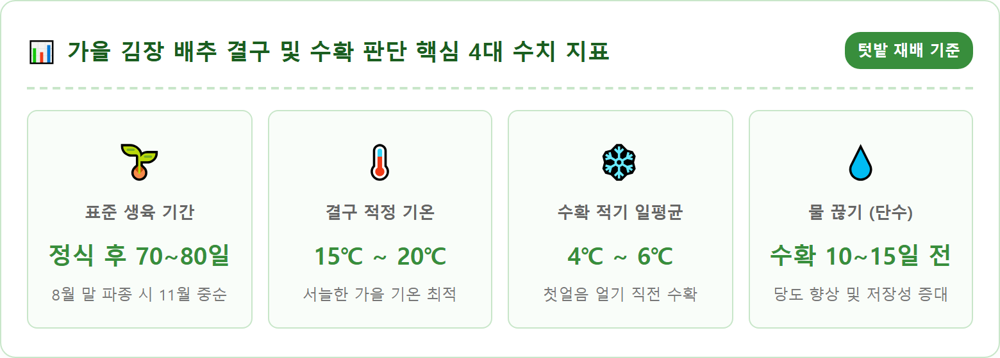
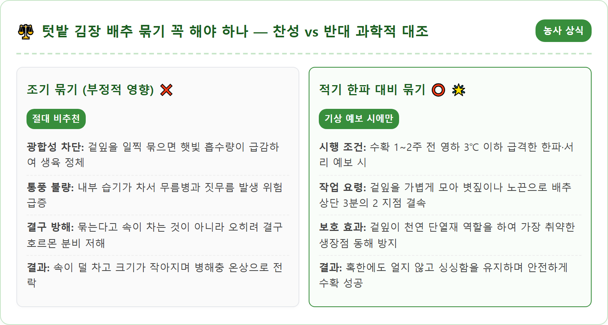
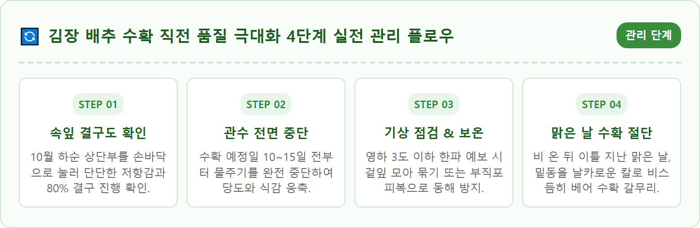
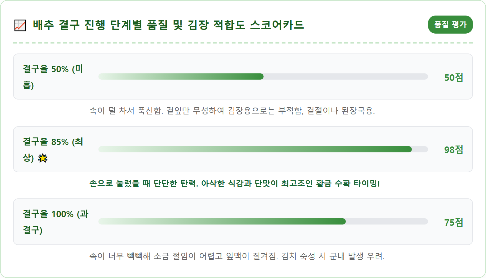
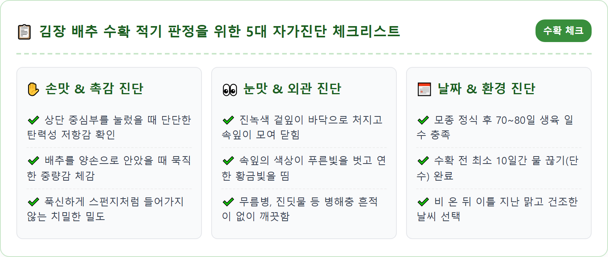
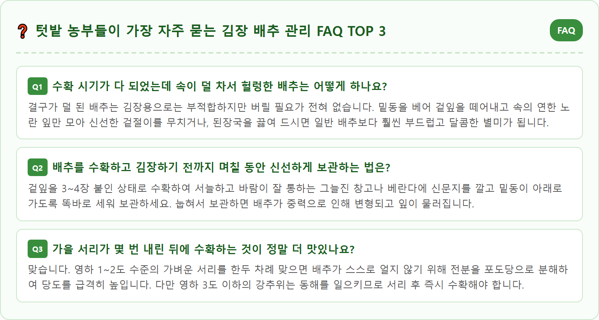

A close-up shot of healthy organic Napa cabbages growing in a neat rural autumn garden in Korea in late October. The cabbage heads are plump and tightly folded showing rich green outer leaves and vibrant yellow inner leaves. Morning autumn sunlight casting long shadows with light dewdrops on the textured cabbage leaves, rich dark fertile garden soil, peaceful rural farm background. High detail macro garden photography, 8k resolution, authentic Korean agriculture.

텃밭 농사의 한 해 농사를 갈무리하는 가장 가슴 뛰는 순간은 바로 서늘한 가을바람 속에 탐스럽게 속이 차오른 김장 배추를 수확할 때입니다. 8월 말에서 9월 초 모종을 아주심기(정식)한 뒤 두 달여 동안 정성껏 물을 주고 해충을 잡아온 주말농부들에게 10월 말은 배추의 결구(속잎이 둥글게 차오르는 현상) 상태를 매일매일 점검해야 하는 결정적인 골든타임입니다.
배추 농사의 성패는 겉으로 보이는 무성한 겉잎의 크기가 아니라, 배추의 심장부인 속잎이 얼마나 치밀하고 단단하게 알차게 들어찼는가에 달려 있습니다. 결구가 덜 된 배추로 김장을 담그면 양념만 많이 먹고 배추 특유의 아삭한 식감이 부족해지며, 반대로 너무 늦게까지 밭에 두어 과결구되거나 서리를 맞아 동해를 입으면 잎맥이 질겨지고 저장 중 쉽게 물러져 버리는 낭패를 겪게 됩니다.
많은 초보 농부들이 궁금해하는 배추 속잎 결구 판별법부터, 예전 시골에서 관행처럼 해오던 '배추 묶기'의 과학적 진실과 올바른 시기, 그리고 배추의 고소한 단맛을 극대화하는 수확 전 물 관리 꿀팁까지 실전 텃밭 노하우를 총망라하여 알기 쉽게 정리해 드립니다.
배추가 둥글고 단단하게 속잎을 감싸 안는 결구 현상은 단순한 성장이 아니라 식물 호르몬과 온도, 일조량이 만들어내는 정교한 생리 작용입니다. 배추는 발아 초기에는 잎이 사방으로 넓게 퍼지는 '로제트형' 생장을 하며 광합성을 통해 양분을 축적합니다. 그러다 잎 수가 20~30장 이상 늘어나고 일평균 기온이 15℃에서 18℃ 사이로 서늘해지는 10월 중순에 접어들면 식물 호르몬인 옥신(Auxin)이 잎의 바깥쪽보다 안쪽에 집중적으로 분포하게 됩니다.
이로 인해 잎 안쪽 조직이 바깥쪽보다 훨씬 빠른 속도로 세포 분열을 일으키며 안쪽으로 굽어지게 되고, 새로 돋아나는 어린 속잎들을 겉잎이 차례로 감싸 안으면서 단단한 구(球) 형태를 형성하는 것입니다. 즉, 배추 겉잎이 가을 햇살을 듬뿍 받아 광합성을 왕성하게 해야만 그 양분이 중심부로 이동하여 노랗고 고소한 속잎을 빽빽하게 채워 넣을 수 있습니다.
따라서 결구 초기(10월 초~중순)에 진딧물이나 청벌레, 달팽이 등 해충의 피해를 입어 겉잎이 갉아 먹히거나, 수분이 부족해 겉잎이 시들면 광합성 공장이 멈추어 속잎이 제대로 차지 않는 '속 빈 배추'가 발생합니다. 겉잎의 건강 상태가 곧 배추 속살의 무게와 밀도를 결정짓는 가장 핵심적인 열쇠입니다.

텃밭에 서서 배추를 바라볼 때 과연 속이 얼마나 찼는지 어떻게 정확히 알 수 있을까요? 가장 확실한 방법은 농부의 감각을 살린 **'상단부 촉진법(觸診法)'**입니다. 맑은 날 오후, 배추 포기 맨 윗부분의 속잎이 모여 있는 중심부를 손바닥 전체로 살포시 감싸 쥐고 가볍게 눌러봅니다.
이때 손끝에서 푹신푹신하게 스펀지처럼 쑥 들어가거나 빈 공간이 느껴진다면 결구율이 50~60% 미만인 상태로 아직 수확하기에는 이릅니다. 반면 손바닥을 아래로 눌렀을 때 마치 단단한 축구공이나 돌덩이를 만지는 것처럼 묵직하고 단단한 탄력성 있는 저항감이 느껴진다면 속잎이 80~90% 이상 빈틈없이 차오른 완벽한 수확 적기입니다.
시각적으로도 쉽게 구분할 수 있습니다. 결구가 진행될수록 바깥쪽의 진한 녹색 겉잎들은 바닥 쪽으로 자연스럽게 벌어지며 처지고, 중심부의 속잎들은 위쪽으로 솟구치지 않고 서로의 머리를 맞대며 둥글게 닫히는 포옹 형태를 띱니다. 살짝 틈새를 벌려 들여다보았을 때 속잎의 색깔이 맑고 투명한 노란빛(연황색)을 띠고 있다면 맛과 식감이 가장 뛰어난 최상의 배추입니다.
가을철 시골 텃밭을 지나다 보면 배추 포기마다 짚풀이나 노끈으로 꽁꽁 묶어둔 풍경을 흔히 보게 됩니다. 이로 인해 많은 초보 텃밭지기들이 "배추를 묶어주어야 속이 차오른다"고 잘못 알고 10월 초순부터 서둘러 배추를 묶는 실수를 저지릅니다. 하지만 농촌진흥청의 연구 결과에 따르면 **배추를 일찍 묶는 행위는 결구에 아무런 도움이 되지 않으며, 오히려 배추의 생육을 심각하게 방해**합니다.
배추 잎을 강제로 모아 묶어버리면 가장 왕성하게 광합성을 해야 할 겉잎들이 햇빛을 받지 못해 양분 생산이 뚝 떨어집니다. 또한 묶인 잎 사이로 공기가 통하지 않아 습기가 차면서 곰팡이병이나 무름병이 발생하여 배추 안쪽이 썩어버리는 원인이 됩니다. 배추는 스스로 호르몬 작용에 의해 잎을 안으로 오므리는 작물이므로 결구를 위해 인위적으로 묶어줄 필요가 전혀 없습니다.
그렇다면 배추는 도대체 언제 묶어야 할까요? 배추를 묶는 유일하고 정당한 목적은 **'수확 직전 영하권 한파로부터 생장점을 보호하는 동해 방지'**입니다. 11월 중순 이후 갑자기 밤 기온이 영하 3℃ 이하로 곤두박질치는 기습 서리나 한파 예보가 발령되었을 때, 겉잎을 모아 윗부분을 느슨하게 묶어주면 겉잎이 얼어붙으면서 얼음 차단막 역할을 하여 속잎의 생장점이 얼어 터지는 것을 완벽하게 막아줍니다.

배추는 서늘한 기후를 좋아하는 대표적인 호냉성 채소로, 추위에 견디는 내한성이 비교적 강한 편입니다. 기온이 영하 1℃~2℃ 정도로 살짝 내려가는 가벼운 가을 서리에는 스스로 당도를 끌어올려 세포액의 어는점을 낮추기 때문에 오히려 배추의 단맛이 깊어지는 긍정적인 효과가 있습니다.
하지만 기온이 **영하 3℃ 이하로 떨어져 장시간 지속되거나 영하 5℃ 이하의 강추위**가 닥치면 겉잎뿐만 아니라 속잎 내부의 수분까지 얼어붙어 세포벽이 파괴되는 치명적인 동해를 입게 됩니다. 한번 얼었다 녹은 배추는 조직이 스펀지처럼 푸석푸석해지고 투명하게 변하면서 김치를 담가도 아삭한 맛이 전혀 나지 않고 악취를 풍기며 물러집니다.
따라서 일기예보를 매일 확인하여 영하권 강추위가 예보되면 신속한 방한 조치를 취해야 합니다. 가장 효과적인 방법은 배추 겉잎을 위로 모아 노끈이나 볏짚으로 가볍게 묶어준 뒤, 그 위에 농업용 부직포나 차광막, 또는 비닐을 2중으로 덮어주는 것입니다. 이렇게 보온 조치를 해주면 영하 5℃~7℃의 기습 한파에도 끄떡없이 안전하게 밭에서 버텨낼 수 있습니다.
김장 배추를 수확하는 가장 이상적인 타이밍은 재배 지역의 기후와 파종일, 그리고 일평균 기온을 종합적으로 고려하여 결정합니다. 품종마다 차이가 있지만 일반적인 가을 김장 배추의 표준 생육 기간은 **모종을 밭에 심은(정식) 날로부터 약 70일에서 85일 사이**입니다. 예를 들어 8월 25일에 모종을 심었다면 11월 5일에서 11월 15일 사이가 생육 일수 기준 수확 적기입니다.
기온 기준으로 볼 때는 **하루 평균 기온이 4℃~6℃ 정도를 유지하고 최저기온이 0℃ 안팎으로 떨어지는 시기**가 김장 배추 수확의 최적기입니다. 중부지방(경기·강원·충청)은 통상 11월 상순부터 중순 사이, 남부지방(호남·영남)은 11월 중순부터 12월 초순 사이가 가장 알맞은 김장철 수확 시기입니다.
너무 일찍 따뜻할 때 수확하여 김장을 담그면 김치가 빠르게 익어 겨우내 오래 두고 먹기 어렵고, 반대로 너무 늦게 수확하면 한파로 인한 동해 피해 위험이 커집니다. 배추를 수확할 날짜는 가족들의 김장 담그는 일정(절임 작업 및 양념 버무림)보다 최소 2~3일 전으로 잡아, 수확 후 겉잎을 다듬고 밭에서 바람을 쐬며 여분의 수분을 날릴 수 있는 여유를 두어야 합니다.

텃밭 농사를 짓는 고수들이 한목소리로 강조하는 명품 김장 배추의 비밀은 바로 **'수확 전 물 끊기(단수)'**에 있습니다. 결구 초기인 10월 초순까지는 배추가 잎을 키우기 위해 하루에 포기당 200ml 이상의 엄청난 수분을 필요로 하지만, 수확을 10일에서 15일 앞둔 시점부터는 물주기를 완전히 중단해야 합니다.
만약 수확 직전까지 물을 흠뻑 주게 되면 배추 조직 내부의 수분 함량이 지나치게 높아집니다. 이렇게 물이 많은 배추로 김장을 담그면 소금에 절일 때 절임물이 과도하게 빠져나와 배추가 질겨지고, 김치를 담근 후에도 양념이 씻겨 내려가 국물만 흥건하고 싱거운 '물김치'처럼 변해버립니다. 게다가 쉽게 물러져 장기 보관이 불가능해집니다.
수확 10~15일 전부터 물을 완전히 끊어 토양을 건조하게 관리하면, 배추는 스스로 체내 수분 증발을 막기 위해 잎 조직 속의 전분을 당분으로 급속히 전환시킵니다. 이 과정을 통해 배추 특유의 고소하고 달큰한 감칠맛이 최고조로 응축되며, 잎 조직이 치밀하고 단단해져 1년 내내 아삭아삭한 식감이 유지되는 최고의 김장 배추로 재탄생합니다.
배추를 수확할 때는 날씨 선택이 매우 중요합니다. 비가 내린 직후나 아침 이슬이 흥건하게 맺혀 있을 때 수확하면 잎에 수분이 많아 곰팡이가 생기기 쉽습니다. 따라서 **비가 온 뒤 최소 이틀 이상 지난 맑고 건조한 날의 오전 10시 이후나 오후 시간대**에 수확하는 것이 가장 이상적입니다.
수확할 때는 배추 포기를 한쪽으로 살짝 기울인 뒤, 겉잎을 아래로 젖히고 밑동과 뿌리가 연결되는 하얀 줄기 부분을 잘 드는 날카로운 칼로 비스듬하게 단칼에 베어냅니다. 흙이나 뿌리가 밑동에 묻지 않도록 깔끔하게 절단해야 위생적입니다. 이때 짙은 초록색 겉잎을 3~4장 정도 남겨둔 채 수확하는 것이 요령입니다. 이 겉잎들은 운반 시 속잎이 상처 입는 것을 방지해 주는 천연 완충재 역할을 합니다.
다듬어낸 나머지 겉잎(시래기)은 절대 버리지 마시고 끓는 물에 소금을 약간 넣고 데쳐낸 뒤 찬물에 헹궈 소분하여 냉동 보관하거나, 그늘진 처마 밑에 말려 겨우내 구수한 배추 시래깃국과 감자탕 재료로 활용하시면 훌륭한 식재료가 됩니다. 수확한 배추를 김장 전 며칠간 보관해야 할 때는 비를 맞지 않는 서늘하고 통풍이 잘되는 창고나 베란다에 신문지를 깔고 밑동이 아래로 가도록 세워서 보관해야 신선도가 유지됩니다.

김장 배추와 무 수확을 모두 마치고 나면 풍성했던 가을 텃밭은 일순간 휑한 빈 밭으로 남게 됩니다. 하지만 진정한 텃밭 농부의 일과는 여기서 끝나는 것이 아닙니다. 배추를 키워내느라 지력(地力)을 소진한 토양을 깨끗이 정리하고 다가오는 봄 농사를 위해 땅심을 회복시켜 주는 월동 토양 관리가 즉시 이어져야 합니다.
먼저 밭에 남아 있는 배추 뿌리와 썩은 잎, 잡초 잔재물을 갈퀴로 깨끗이 긁어모아 밭 밖으로 반출해야 합니다. 병든 잔재물을 밭에 그대로 방치하면 균핵병이나 노균병 포자가 토양 속에서 월동하여 이듬해 봄 작물에 그대로 전염되기 때문입니다. 잔재물을 수거한 후에는 쇠스랑이나 관리기로 흙을 20cm 깊이로 가볍게 뒤집어주어 겨울철 한파와 햇볕에 흙 속 유해충의 알과 병원균이 자연 살균되도록 유도합니다.
겨울철 빈 밭을 나대지로 방치하면 거센 겨울바람에 비옥한 표토가 유실되고 토양이 딱딱하게 굳어버립니다. 이를 방지하는 최고의 비법은 11월 중순 수확 직후 빈 밭에 **호밀(헤어리베치)이나 청보리 같은 녹비(綠肥) 작물 씨앗**을 흩뿌려 파종하는 것입니다. 호밀은 영하 20℃의 혹한 속에서도 파릇파릇하게 싹을 틔워 겨울 동안 토양 유실을 막아주며, 이듬해 봄 꽃피기 전 밭에 갈아엎으면 화학비료가 전혀 필요 없는 최상급 천연 유기물 퇴비가 되어 땅을 기름지게 살려냅니다.
